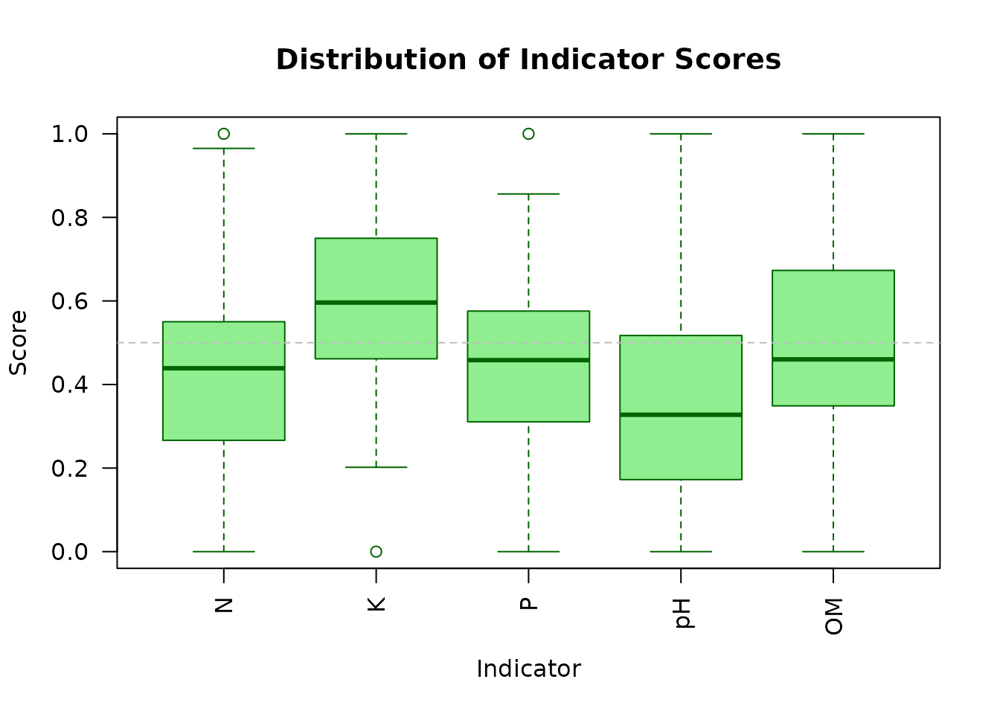
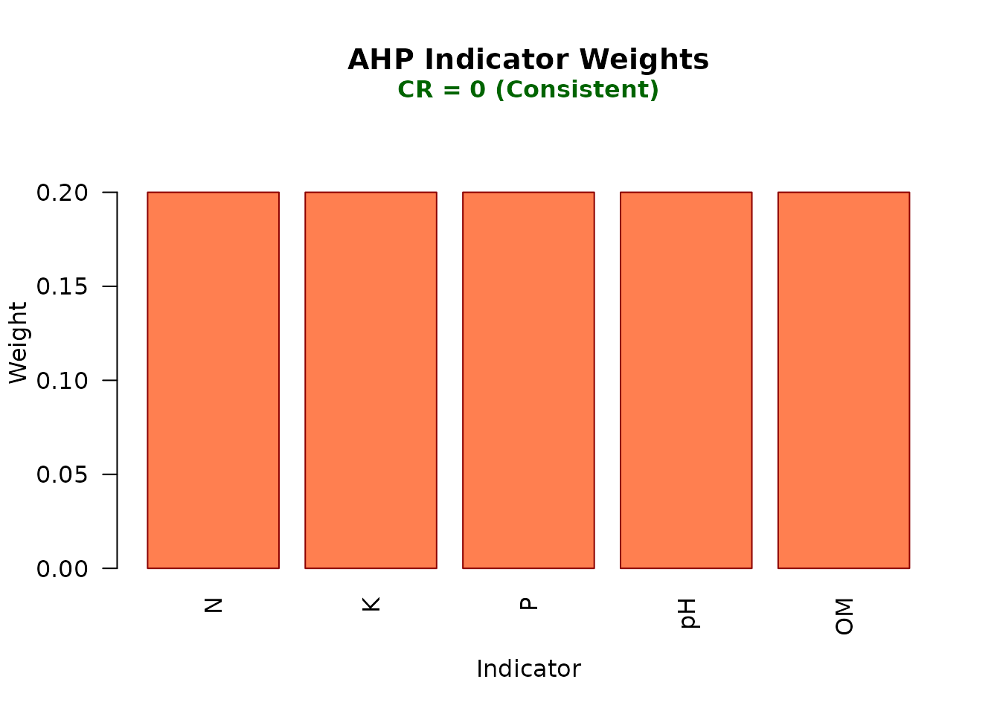
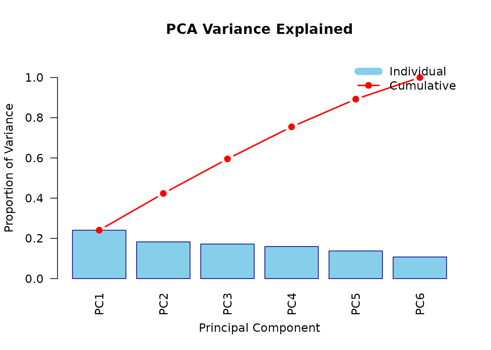
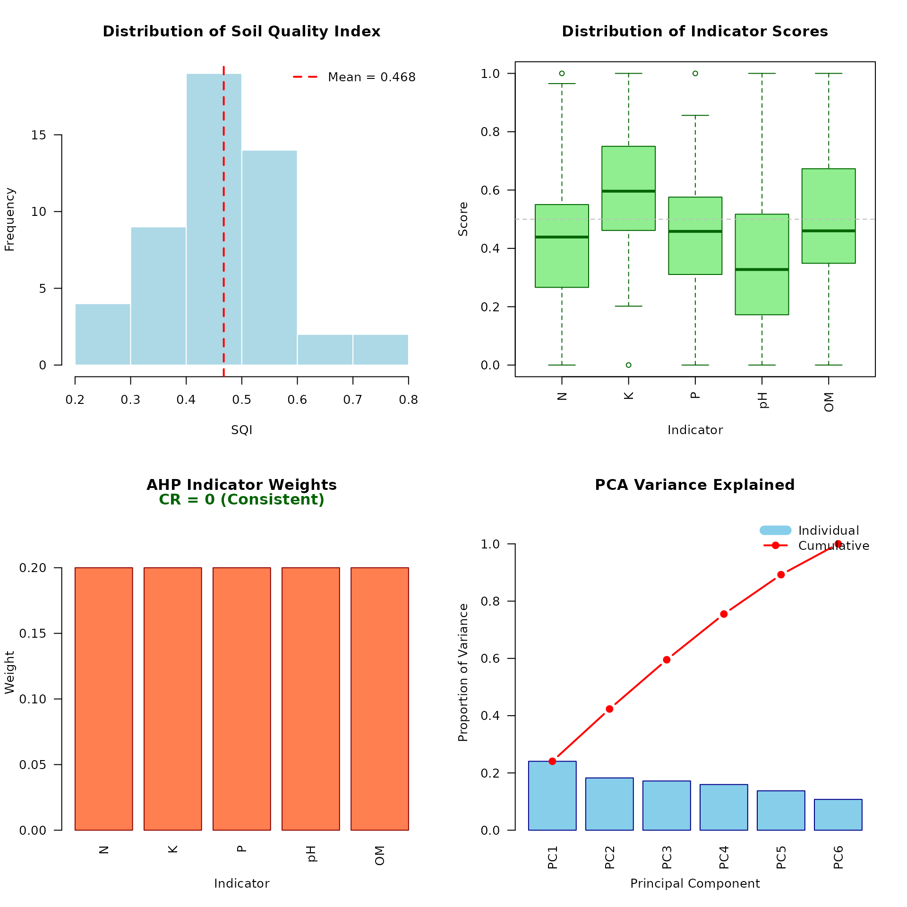

Introduction to soilquality
soilquality package
2025-12-07
Source:vignettes/introduction.Rmd
introduction.RmdOverview
The soilquality package provides tools for calculating Soil Quality Index (SQI) using a scientifically rigorous approach that combines:
- Principal Component Analysis (PCA) for selecting a Minimum Data Set (MDS) of soil indicators
- Analytic Hierarchy Process (AHP) for expert-based weighting of indicators
- Flexible scoring functions for normalizing soil properties to a 0-1 scale
- Visualization tools for interpreting and communicating results
This package is designed for soil scientists, researchers, and environmental consultants who need to assess soil quality in a systematic and reproducible way.
Installation
From GitHub
You can install the development version of soilquality from GitHub:
# Install devtools if you haven't already
install.packages("devtools")
# Install soilquality from GitHub
devtools::install_github("username/soilquality")Basic Workflow
The typical workflow for calculating SQI involves these steps:
- Load and prepare your soil data
- Select soil properties for analysis
- Define scoring rules for each property
- Calculate indicator weights (optional: use AHP)
- Compute the SQI
- Visualize and interpret results
Let’s walk through a complete example using the included
soil_ucayali dataset.
Load the Package and Data
library(soilquality)
# Load the example dataset
data(soil_ucayali)
# View the first few rows
head(soil_ucayali)
#> SampleID Sand Silt Clay BD pH OM SOC N P K CEC Ca Mg EC
#> 1 UCY001 42.4 35.4 22.2 1.47 7.0 2.46 1.24 0.201 7.8 131 10.2 5.51 2.44 0.06
#> 2 UCY002 42.7 30.2 27.1 1.47 6.2 2.29 1.22 0.050 4.5 121 9.0 3.56 1.78 0.26
#> 3 UCY003 54.6 25.4 20.0 1.40 5.0 2.49 1.13 0.129 6.1 106 15.1 5.83 1.78 0.31
#> 4 UCY004 41.9 37.4 20.7 1.20 5.6 2.88 1.07 0.156 7.9 113 14.3 4.80 0.89 0.10
#> 5 UCY005 50.1 30.3 19.6 1.33 4.9 4.24 1.38 0.105 10.0 118 7.5 6.48 2.27 0.30
#> 6 UCY006 49.5 31.8 18.7 1.31 4.8 2.72 1.77 0.167 3.0 40 11.7 2.75 1.67 0.17The soil_ucayali dataset contains 50 soil samples from
the Ucayali region of Peru, with 14 soil properties including physical,
chemical, and fertility indicators.
Quick Start: Basic SQI Calculation
The simplest way to calculate SQI is using
compute_sqi_properties() with default settings:
# Calculate SQI using standard fertility properties
result <- compute_sqi_properties(
data = soil_ucayali,
properties = c("pH", "OM", "N", "P", "K", "CEC"),
id_column = "SampleID"
)
# View the result
print(result)
#> $mds
#> [1] "N" "K" "P" "pH" "OM"
#>
#> $weights
#> N K P pH OM
#> 0.2 0.2 0.2 0.2 0.2
#>
#> $CR
#> [1] 0
#>
#> $results
#> SampleID pH OM N P K CEC N_scored K_scored P_scored
#> 1 UCY001 7.0 2.46 0.201 7.8 131 10.2 0.65938865 0.8750000 0.43939394
#> 2 UCY002 6.2 2.29 0.050 4.5 121 9.0 0.00000000 0.7788462 0.18939394
#> 3 UCY003 5.0 2.49 0.129 6.1 106 15.1 0.34497817 0.6346154 0.31060606
#> 4 UCY004 5.6 2.88 0.156 7.9 113 14.3 0.46288210 0.7019231 0.44696970
#> 5 UCY005 4.9 4.24 0.105 10.0 118 7.5 0.24017467 0.7500000 0.60606061
#> 6 UCY006 4.8 2.72 0.167 3.0 40 11.7 0.51091703 0.0000000 0.07575758
#> 7 UCY007 4.6 3.77 0.171 7.0 123 9.3 0.52838428 0.7980769 0.37878788
#> 8 UCY008 4.7 3.37 0.148 10.3 83 5.8 0.42794760 0.4134615 0.62878788
#> 9 UCY009 6.5 2.70 0.050 6.4 101 12.5 0.00000000 0.5865385 0.33333333
#> 10 UCY010 5.2 1.42 0.279 8.7 88 11.8 1.00000000 0.4615385 0.50757576
#> 11 UCY011 5.3 2.33 0.140 9.5 117 11.7 0.39301310 0.7403846 0.56818182
#> 12 UCY012 5.4 2.36 0.183 8.8 86 12.6 0.58078603 0.4423077 0.51515152
#> 13 UCY013 6.2 2.84 0.164 10.0 108 14.6 0.49781659 0.6538462 0.60606061
#> 14 UCY014 4.8 3.97 0.201 7.6 85 12.6 0.65938865 0.4326923 0.42424242
#> 15 UCY015 4.4 4.86 0.191 6.8 68 10.2 0.61572052 0.2692308 0.36363636
#> 16 UCY016 6.5 4.19 0.140 2.0 125 9.8 0.39301310 0.8173077 0.00000000
#> 17 UCY017 4.8 2.68 0.169 7.7 114 11.6 0.51965066 0.7115385 0.43181818
#> 18 UCY018 4.6 1.22 0.103 9.3 138 12.9 0.23144105 0.9423077 0.55303030
#> 19 UCY019 4.2 2.45 0.193 9.6 97 8.9 0.62445415 0.5480769 0.57575758
#> 20 UCY020 4.2 2.88 0.127 6.3 123 11.4 0.33624454 0.7980769 0.32575758
#> 21 UCY021 4.7 3.56 0.271 13.3 144 14.9 0.96506550 1.0000000 0.85606061
#> 22 UCY022 5.7 3.67 0.067 8.9 88 11.7 0.07423581 0.4615385 0.52272727
#> 23 UCY023 6.1 3.42 0.127 8.4 62 9.9 0.33624454 0.2115385 0.48484848
#> 24 UCY024 5.8 1.54 0.191 11.8 89 11.2 0.61572052 0.4711538 0.74242424
#> 25 UCY025 4.9 3.56 0.176 5.8 90 15.3 0.55021834 0.4807692 0.28787879
#> 26 UCY026 5.2 2.40 0.121 6.6 99 13.7 0.31004367 0.5673077 0.34848485
#> 27 UCY027 4.6 2.96 0.100 15.2 138 15.7 0.21834061 0.9423077 1.00000000
#> 28 UCY028 4.6 2.87 0.157 8.0 87 12.4 0.46724891 0.4519231 0.45454545
#> 29 UCY029 5.9 3.19 0.149 12.9 104 13.2 0.43231441 0.6153846 0.82575758
#> 30 UCY030 4.4 2.82 0.060 3.7 89 10.3 0.04366812 0.4711538 0.12878788
#> 31 UCY031 6.8 1.30 0.152 7.4 96 13.8 0.44541485 0.5384615 0.40909091
#> 32 UCY032 5.1 3.46 0.160 9.1 103 10.5 0.48034934 0.6057692 0.53787879
#> 33 UCY033 5.4 3.15 0.159 8.9 128 7.7 0.47598253 0.8461538 0.52272727
#> 34 UCY034 4.6 2.56 0.097 5.0 98 12.4 0.20524017 0.5576923 0.22727273
#> 35 UCY035 4.7 2.91 0.174 8.1 113 17.8 0.54148472 0.7019231 0.46212121
#> 36 UCY036 4.1 2.92 0.219 4.8 114 14.4 0.73799127 0.7115385 0.21212121
#> 37 UCY037 5.1 3.00 0.173 10.1 118 15.5 0.53711790 0.7500000 0.61363636
#> 38 UCY038 5.5 4.28 0.093 11.3 81 13.1 0.18777293 0.3942308 0.70454545
#> 39 UCY039 5.5 2.60 0.128 2.0 136 10.2 0.34061135 0.9230769 0.00000000
#> 40 UCY040 4.6 2.95 0.167 11.7 85 11.4 0.51091703 0.4326923 0.73484848
#> 41 UCY041 4.6 3.85 0.118 4.3 92 11.2 0.29694323 0.5000000 0.17424242
#> 42 UCY042 4.8 3.75 0.050 9.4 130 10.6 0.00000000 0.8653846 0.56060606
#> 43 UCY043 6.4 3.83 0.194 10.0 127 14.1 0.62882096 0.8365385 0.60606061
#> 44 UCY044 4.3 2.28 0.109 7.4 68 8.4 0.25764192 0.2692308 0.40909091
#> 45 UCY045 5.1 4.60 0.121 6.1 73 14.6 0.31004367 0.3173077 0.31060606
#> 46 UCY046 6.7 2.86 0.225 8.5 61 14.6 0.76419214 0.2019231 0.49242424
#> 47 UCY047 5.1 4.48 0.111 9.3 100 8.4 0.26637555 0.5769231 0.55303030
#> 48 UCY048 4.1 1.58 0.192 10.6 99 13.9 0.62008734 0.5673077 0.65151515
#> 49 UCY049 4.7 2.82 0.087 2.0 104 19.3 0.16157205 0.6153846 0.00000000
#> 50 UCY050 5.6 3.92 0.132 3.1 109 10.3 0.35807860 0.6634615 0.08333333
#> pH_scored OM_scored SQI
#> 1 1.00000000 0.34065934 0.6628884
#> 2 0.72413793 0.29395604 0.3972668
#> 3 0.31034483 0.34890110 0.3898891
#> 4 0.51724138 0.45604396 0.5170120
#> 5 0.27586207 0.82967033 0.5403535
#> 6 0.24137931 0.41208791 0.2480284
#> 7 0.17241379 0.70054945 0.5156425
#> 8 0.20689655 0.59065934 0.4535506
#> 9 0.82758621 0.40659341 0.4308103
#> 10 0.37931034 0.05494505 0.4806739
#> 11 0.41379310 0.30494505 0.4840635
#> 12 0.44827586 0.31318681 0.4599416
#> 13 0.72413793 0.44505495 0.5853832
#> 14 0.24137931 0.75549451 0.5026394
#> 15 0.10344828 1.00000000 0.4704072
#> 16 0.82758621 0.81593407 0.5707682
#> 17 0.24137931 0.40109890 0.4610971
#> 18 0.17241379 0.00000000 0.3798386
#> 19 0.03448276 0.33791209 0.4241367
#> 20 0.03448276 0.45604396 0.3901212
#> 21 0.20689655 0.64285714 0.7341760
#> 22 0.55172414 0.67307692 0.4566605
#> 23 0.68965517 0.60439560 0.4653365
#> 24 0.58620690 0.08791209 0.5006835
#> 25 0.27586207 0.64285714 0.4475171
#> 26 0.37931034 0.32417582 0.3858645
#> 27 0.17241379 0.47802198 0.5622168
#> 28 0.17241379 0.45329670 0.3998856
#> 29 0.62068966 0.54120879 0.6070710
#> 30 0.10344828 0.43956044 0.2373237
#> 31 0.93103448 0.02197802 0.4691960
#> 32 0.34482759 0.61538462 0.5168419
#> 33 0.44827586 0.53021978 0.5646719
#> 34 0.17241379 0.36813187 0.3061502
#> 35 0.20689655 0.46428571 0.4753423
#> 36 0.00000000 0.46703297 0.4257368
#> 37 0.34482759 0.48901099 0.5469186
#> 38 0.48275862 0.84065934 0.5219934
#> 39 0.48275862 0.37912088 0.4251136
#> 40 0.17241379 0.47527473 0.4652293
#> 41 0.17241379 0.72252747 0.3732254
#> 42 0.24137931 0.69505495 0.4724850
#> 43 0.79310345 0.71703297 0.7163113
#> 44 0.06896552 0.29120879 0.2592276
#> 45 0.34482759 0.92857143 0.4422713
#> 46 0.89655172 0.45054945 0.5611281
#> 47 0.34482759 0.89560440 0.5273522
#> 48 0.00000000 0.09890110 0.3875623
#> 49 0.20689655 0.43956044 0.2846827
#> 50 0.51724138 0.74175824 0.4727746
#>
#> $pca
#> Standard deviations (1, .., p=6):
#> [1] 1.2017266 1.0469160 1.0156199 0.9785231 0.9083996 0.8035165
#>
#> Rotation (n x k) = (6 x 6):
#> PC1 PC2 PC3 PC4 PC5 PC6
#> pH -0.04895981 -0.5700395 0.1154650 -0.7904182 0.18441227 -0.02359874
#> OM 0.44217933 0.2758787 -0.4027009 -0.1167926 0.73550006 0.10770122
#> N -0.54756497 0.4423174 0.0590335 -0.2826793 0.05604688 0.64652461
#> P -0.48824240 0.2012391 -0.5880626 -0.1952384 -0.05022056 -0.57850192
#> K -0.23046074 -0.5905356 -0.5414652 0.3629924 0.06094813 0.41169512
#> CEC -0.45908625 -0.1186244 0.4266295 0.3343793 0.64471214 -0.25630475
#>
#> $loadings
#> PC1 PC2 PC3 PC4 PC5 PC6
#> pH -0.04895981 -0.5700395 0.1154650 -0.7904182 0.18441227 -0.02359874
#> OM 0.44217933 0.2758787 -0.4027009 -0.1167926 0.73550006 0.10770122
#> N -0.54756497 0.4423174 0.0590335 -0.2826793 0.05604688 0.64652461
#> P -0.48824240 0.2012391 -0.5880626 -0.1952384 -0.05022056 -0.57850192
#> K -0.23046074 -0.5905356 -0.5414652 0.3629924 0.06094813 0.41169512
#> CEC -0.45908625 -0.1186244 0.4266295 0.3343793 0.64471214 -0.25630475
#>
#> $var_exp
#> [1] 0.2406911 0.1826722 0.1719140 0.1595846 0.1375316 0.1076065
#>
#> attr(,"class")
#> [1] "sqi_result"This function automatically:
- Standardizes the selected properties
- Performs PCA to select the Minimum Data Set (MDS)
- Applies standard scoring rules appropriate for each property
- Calculates equal weights for indicators (or uses AHP if provided)
- Computes the final SQI for each sample
Understanding the Results
The result object contains several components:
# Selected MDS indicators
result$mds
#> [1] "N" "K" "P" "pH" "OM"
# Indicator weights
result$weights
#> N K P pH OM
#> 0.2 0.2 0.2 0.2 0.2
# Consistency Ratio (for AHP)
result$CR
#> [1] 0
# View SQI values for first few samples
head(result$results[, c("SampleID", "SQI")])
#> SampleID SQI
#> 1 UCY001 0.6628884
#> 2 UCY002 0.3972668
#> 3 UCY003 0.3898891
#> 4 UCY004 0.5170120
#> 5 UCY005 0.5403535
#> 6 UCY006 0.2480284Key components:
- mds: The soil properties selected as the Minimum Data Set through PCA
- weights: The importance weight assigned to each MDS indicator
- CR: Consistency Ratio for AHP (should be < 0.1 for reliable weights)
- results: A data frame with original data, scored indicators, and final SQI
Interpreting SQI Values
SQI values range from 0 to 1, where:
- 0.8 - 1.0: Excellent soil quality
- 0.6 - 0.8: Good soil quality
- 0.4 - 0.6: Moderate soil quality
- 0.2 - 0.4: Poor soil quality
- 0.0 - 0.2: Very poor soil quality
# Summary statistics of SQI
summary(result$results$SQI)
#> Min. 1st Qu. Median Mean 3rd Qu. Max.
#> 0.2373 0.4059 0.4673 0.4675 0.5207 0.7342
# Count samples by quality class
sqi_values <- result$results$SQI
quality_class <- cut(sqi_values,
breaks = c(0, 0.2, 0.4, 0.6, 0.8, 1.0),
labels = c("Very Poor", "Poor", "Moderate",
"Good", "Excellent"))
table(quality_class)
#> quality_class
#> Very Poor Poor Moderate Good Excellent
#> 0 13 33 4 0Visualization
The package provides several visualization options to help interpret results.
SQI Distribution
View the distribution of SQI values across all samples:
plot(result, type = "distribution")
This histogram shows how SQI values are distributed, with a vertical line indicating the mean SQI.
Indicator Scores
Compare the scores of different indicators:
plot(result, type = "indicators")
Boxplots show the distribution of scores for each MDS indicator, helping identify which properties are limiting soil quality.
Indicator Weights
View the relative importance of each indicator:
plot(result, type = "weights")
The bar chart shows the weight assigned to each indicator. The Consistency Ratio (CR) is displayed at the top.
PCA Scree Plot
Examine the variance explained by principal components:
plot(result, type = "scree")
This plot helps understand how much variance is captured by the selected principal components.
Comprehensive Report
Generate all plots at once in a multi-panel layout:
plot_sqi_report(result)
Using Pre-defined Property Sets
The package includes several pre-defined property sets for common analyses:
# Available property sets
names(soil_property_sets)
#> [1] "basic" "standard" "comprehensive" "physical"
#> [5] "chemical" "fertility"
# View the standard property set
soil_property_sets$standard
#> [1] "Sand" "Silt" "Clay" "pH" "OM" "N" "P" "K" "CEC"
# Use a pre-defined property set
result_standard <- compute_sqi_properties(
data = soil_ucayali,
properties = soil_property_sets$standard,
id_column = "SampleID"
)Available property sets:
- basic: Essential properties (pH, OM, P, K)
- standard: Common soil test properties
- comprehensive: Extended property list
- physical: Physical properties only
- chemical: Chemical properties only
- fertility: Fertility-related properties
Custom Property Selection
You can also specify your own custom set of properties:
# Focus on physical properties
physical_props <- c("Sand", "Silt", "Clay", "BD")
result_physical <- compute_sqi_properties(
data = soil_ucayali,
properties = physical_props,
id_column = "SampleID"
)
# View selected MDS
result_physical$mds
#> [1] "Sand" "Clay" "BD"Next Steps
This introduction covered the basic workflow for calculating SQI. To learn more:
-
Advanced Usage: See
vignette("advanced-usage")for custom scoring rules, property selection strategies, and advanced visualization options -
AHP Matrices: See
vignette("ahp-matrices")for creating expert-based indicator weights using the Analytic Hierarchy Process -
Function Reference: Use
help(package = "soilquality")to browse all available functions
References
Andrews, S. S., Karlen, D. L., & Cambardella, C. A. (2004). The soil management assessment framework: A quantitative soil quality evaluation method. Soil Science Society of America Journal, 68(6), 1945-1962.
Saaty, T. L. (1980). The Analytic Hierarchy Process. McGraw-Hill.
Shukla, M. K., Lal, R., & Ebinger, M. (2006). Determining soil quality indicators by factor analysis. Soil and Tillage Research, 87(2), 194-204.